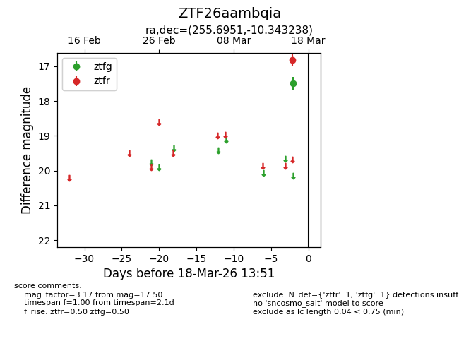
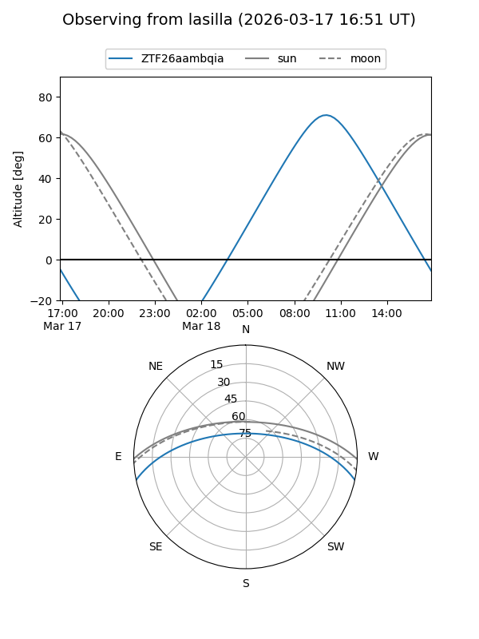
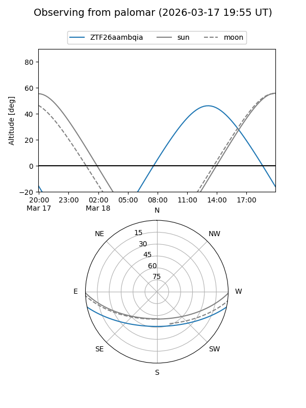

ZTF26aambqia
Target ZTF26aambqia at 2026-03-18 13:53
Aliases and brokers:
FINK: link
Lasair: link
ALeRCE: link
alt names
ZTF26aambqia (ztf,fink_ztf)
Coordinates:
equatorial (ra, dec) = 255.6951,-10.34324
equatorial (HMS+DMS) = 17:02:46.83,-10:20:35.66
galactic (l, b) = (10.3175,+18.53276)
Flags:
Photometry:
last ztfg=17.50, ztfr=16.82
1 ztfg, 1 ztfr detections
Lightcurve

Visibility


Additional plots